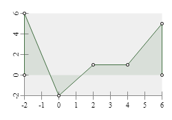
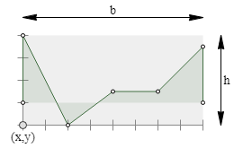
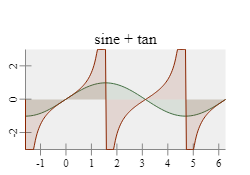
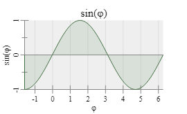
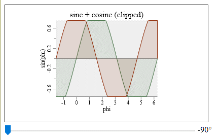
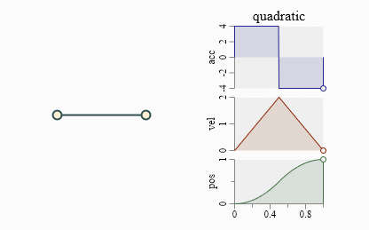

g2.chart #
g2.chart is an important brick for g2.js being an engineers and scientists graphics tool.
g2.chart as a g2 addon generates x/y-line charts only, but it does that very well.
Example: first chart #

<canvas id="c" width="250" height="175"></canvas>
<script src="https://gitcdn.xyz/repo/goessner/g2/master/src/g2.js"></script>
<script>
g2().view({cartesian:true})
.chart({x:35,y:35,b:200,h:120,
funcs:[{data:[-2,6,0,-2,2,1,4,1,6,5],fill:true,dots:true}],
xaxis:{},
yaxis:{},
})
.exe(document.getElementById("c").getContext("2d"));
</script>
Chart usage #
g2.chart introduces a new chart command, which expects a single javascript object
specifying the chart properties. In order to use it properly you need to set g2's
cartesian flag. You want to set the chart dimensions by specifying the lower left corner x and y
as well as width b and height h of the rectangular chart area.
Please note, that chart title, axis ticks, labels and titles are not included in that dimensions.

Chart functions, range and style #
Line charts display functional relations. These relations can be numerically represented via datasets or
algebraically via functions. g2.chart offers both representations. A single chart can contain multiple
functions and even mix numerical and algebraic forms.
The chart x-value range is extracted from available datasets or must be explicitly specified. Its y-value range can be derived from both datasets and algebraic functions or - again - be explicitly set.
Example: multiple functions #

g2().view({cartesian:true})
.chart({x:25,y:25,b:200,h:100,
title:{text:"sine + tan"},
xmin:-Math.PI/2,xmax:2*Math.PI,
ymin:-3,ymax:3,
funcs:[
{fn:Math.sin,dx:Math.PI/30,fill:true},
{fn:Math.tan,dx:Math.PI/90,fill:true}
]})
.exe(ctx);
In this example the x-value range is explicitely set by xmin and xmax. It is valid then for all functions.
The y-value range is also explicitely set by ymin and ymax. That is done here only, because
the tan-function has singularities at odd multiples of pi/2. So its chart is simply clipped to the
desired range of [-3,3].
Please note that we didn't specify a color for displaying the functions in the last example. g2.chart provides a small set of
default colors for sequentially assigning them to functions without explicite color definitions. If the
fill property is set to true, the function chart is filled with respect to the zero x-axis using
its semi-transparent function color.
Example: Axis properties #

g2().view({cartesian:true})
.chart({ x:35,y:35,b:200,h:100,
title:{ text:"sin(φ)"},
xmin:-Math.PI/2,xmax:2*Math.PI,
funcs:[
{fn:Math.sin,dx:Math.PI/30,fill:true}
],
xaxis: {
title:"φ",
grid:true
},
yaxis: {
title:"sin(φ)",
origin:true
}
})
.exe(ctx);
Chart API #
After a chart object is created, we might want to interact with it then. So we would like to request canvas coordinates for certain chart area coordinates. There is a small API for supporting tasks like this.
| Method | Arguments | Returns | Description |
|---|---|---|---|
valOf(pix) |
pix canvas point |
object |
Point value in chart coordinates from point in canvas coordinates. |
pixOf(usr) |
usr chart point |
object |
Point value in canvas coordinates from point in chart coordinates. |
trimPixOf(usr) |
usr chart point |
object |
Point value in canvas coordinates from point in chart coordinates trimmed to chart area region limits. |
yOf(x) |
x chart x-value |
float |
y-value in chart coordinates. |
drawMarkersAt(g,x) |
g g2 instance x chart x-value |
object |
Draw marker points in canvas coordinates to g2 instance g according to x-value for all functions in chart. |
It is possible to place markers on chart functions after they are generated. For this we use a g2 feature to transfer
its prototype on objects which are given as parameters to g2 commands.
Example: chart marker #

const ctx = document.getElementById("c").getContext("2d");
const chrt = { x:20,y:20,b:200,h:100,
funcs:[{data:[-1,-2,3,2,6,0],fill:true}],
title:{text:"marker on chart"},
xaxis:{},
yaxis:{origin:true}
};
g = g2().view({cartesian:true});
g.chart(chrt)
.exe(ctx);
g.nod({...chrt.pntOf({x:4,y:1.33})}).exe(ctx);
Those markers can be set interactively then.
Example: interactive chart #

const ctx = document.getElementById("c").getContext("2d"),
range = document.getElementById("range"),
output = document.getElementById("output"),
chrt = {
x:100,y:50,b:200,h:150,
xmin:-Math.PI/2,xmax:2*Math.PI,
ymin:-0.75,ymax:0.75,
funcs:[
{fn:Math.sin,dx:Math.PI/30,fill:true},
{fn:Math.cos,dx:Math.PI/30,fill:true},
],
title:"sine + cosine (clipped)",
xaxis:{title:"phi"},
yaxis:{title:"sin(phi)",origin:true}
};
let phi = -Math.PI/2, mrk1,mrk2;
function render() {
g2().clr()
.view({cartesian:true})
.chart(chrt)
.nod({...mrk1})
.nod({...mrk2})
.exe(ctx);
};
function setPhi(e) {
output.value = range.value + "°";
phi = range.value/180*Math.PI;
mrk1 = chrt.pntOf({x:phi,y:Math.sin(phi)});
mrk2 = chrt.pntOf({x:phi,y:Math.cos(phi)});
render();
};
range.addEventListener("input",setPhi,false);
render();
Markers can also get animated along simulation parameters.
Example: animated chart #

<canvas id="c" width="501" height="301"></canvas><br>
<script src="https://gitcdn.xyz/repo/goessner/g2/master/src/g2.js"></script>
<script src="https://gitcdn.xyz/repo/goessner/morphr/master/morphr.min.js"></script>
<script>
let phi = 0;
const ctx = document.getElementById("c").getContext("2d"),
posChart = {
x:200,y:-100,b:100,h:50,
xmin:0,xmax:1,
funcs:[{fn:Morphr.quadratic, dx:0.02, fill:true}],
yaxis:{title:"pos"},
xaxis:{}
},
velChart = {
x:200,y:-40,b:100,h:60,
xmin:0,xmax:1,
funcs:[{fn:(q) => { return q < 0.5 ? 4*q : 4 - 4*q }, dx:0.02, color:1, fill:true}],
xaxis:false,
yaxis:{title:"vel"}
},
accChart = {
x:200,y:30,b:100,h:70,
title:{text:"quadratic"},
xmin:0,xmax:1,
funcs:[{fn:(q) => { return q < 0.5 ? 4 : -4 }, dx:0.005, color:2, fill:true}],
xaxis:false,
yaxis:{title:"acc"}
},
g = g2().clr().view({x:150,y:150,cartesian:true})
.chart(posChart)
.chart(velChart)
.chart(accChart)
.beg({w:() => phi,fs:"papayawhip",ls:"darkslategray",lw:2})
.lin({x1:0,y1:0,x2:100,y2:0})
.cir({x:100,y:0,r:5})
.cir({x:0,y:0,r:5})
.end(),
morphr = Morphr.create(4,0,"quadratic") // create and configure Morphr object ...
.register((q) => { phi = q*2*Math.PI; }) // rotate by 360° in 4 s.
.register(render) // render to canvas
.start(); // init ...
function render() {
const q = phi/2/Math.PI;
g.exe(ctx);
g2().view({x:150,y:150,cartesian:true})
.nod({...accChart.pntOf({x:q, y:accChart.funcs[0].fn(q)})})
.nod({...velChart.pntOf({x:q, y:velChart.funcs[0].fn(q)})})
.nod({...posChart.pntOf({x:q, y:posChart.funcs[0].fn(q)})})
.exe(ctx);
}
</script>
Chart Properties #
We can set some properties with x- and y-axis, as axis titles, grids and an explicite origin line. It is also possible to suppress automatically defined axis ticks and labels. Custom labels are not implemented at current.
You can overwrite the the default values, if you are not comfortable with them.
| Name | Type | Default | Description |
|---|---|---|---|
x |
float |
- | x position of chart area's lower left corner. |
y |
float |
- | y position of chart area's lower left corner. |
b |
float |
- | breadth / width of chart area. |
h |
float |
- | height of chart area. |
title |
string or object |
null |
chart title string or object specifying title properties. |
title.text |
string |
null |
chart title string. |
title.offset |
float |
3 |
vertical offset to chart area. |
title.style |
object |
{foc:"black", foz:16, thal:"center", tval:"bottom"} |
title style. |
funcs |
array |
[] |
array of dataset data and / or function fn objects. |
funcs[item] |
object |
dataset and / or function object. | |
funcs[item].data |
array |
array of data points as flat array [x,y,..], array of point arrays [[x,y],..] or array of point objects [{x,y},..]. |
|
funcs[item].fn |
function |
Function y = f(x) accepting x-value returning y-value. |
|
funcs[item].dx |
float |
x increment to apply to function fn. Ignored with data points. |
|
funcs[item].fill |
boolean |
false |
Fill region between function polygon and x-origin line. |
funcs[item].dots |
boolean |
false |
Place circular dots at data points. Better avoid with fns. |
xaxis |
object |
x-axis properties. | |
xaxis.style |
object |
{ls:"#888", thal:"center", tval:"top", foc:"black"} |
x-axis style. |
xaxis.title |
string or object |
x-axis title string or object specifying title properties. | |
xaxis.title.text |
string |
null |
x-axis title string. |
xaxis.title.offset |
float |
1 |
vertical x-axis title string offset. |
xaxis.title.style |
object |
{foz:12} |
x-axis title style. Not specified properties are inherited from xaxis.style. |
xaxis.line |
boolean |
true |
display x-axis base line. |
xaxis.origin |
boolean |
false |
display x-axis origin line. |
xaxis.ticks |
object |
display x-axis ticks. Set to false to suppress. |
|
xaxis.ticks.len |
float |
6 |
x-axis major ticks length. |
xaxis.grid |
boolean or object |
false |
display x-axis grid using style object. |
xaxis.labels |
boolean or object |
display x-axis labels. | |
xaxis.labels.loc |
'auto' |
'auto' |
calculate x-axis labels automatically. |
xaxis.labels.offset |
float |
1 |
vertical x-axis labels string offset. |
xaxis.labels.style |
object |
{foz:11} |
x-axis labels style. Not specified properties are inherited from xaxis.style. |
yaxis |
object |
y-axis properties. | |
yaxis.style |
object |
{ls:"#888", thal:"center", tval:"bottom", foc:"black"} |
y-axis style. |
yaxis.title |
string or object |
y-axis title string or object specifying title properties. | |
yaxis.title.text |
string |
null |
y-axis title string. |
yaxis.title.offset |
float |
2 |
horizontal y-axis title string offset. |
yaxis.title.style |
object |
{foz:12} |
y-axis title style. Not specified properties are inherited from yaxis.style. |
yaxis.line |
boolean |
true |
display y-axis base line. |
yaxis.origin |
boolean |
false |
display y-axis origin line. |
yaxis.ticks |
object |
display y-axis ticks. Set to false to suppress. |
|
yaxis.ticks.len |
float |
6 |
y-axis major ticks length. |
yaxis.grid |
boolean or object |
false |
display y-axis grid using style object. |
yaxis.labels |
boolean or object |
display y-axis labels. | |
yaxis.labels.loc |
'auto' |
'auto' |
calculate y-axis labels automatically. |
yaxis.labels.offset |
float |
1 |
horizontal y-axis labels string offset. |
yaxis.labels.style |
object |
{foz:11} |
y-axis labels style. Not specified properties are inherited from yaxis.style. |